Treinando IAs de imagens brasileiras
Luciano Santa Brígida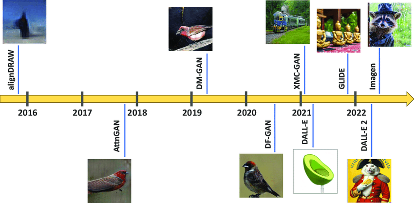
Grafo de treinamento:
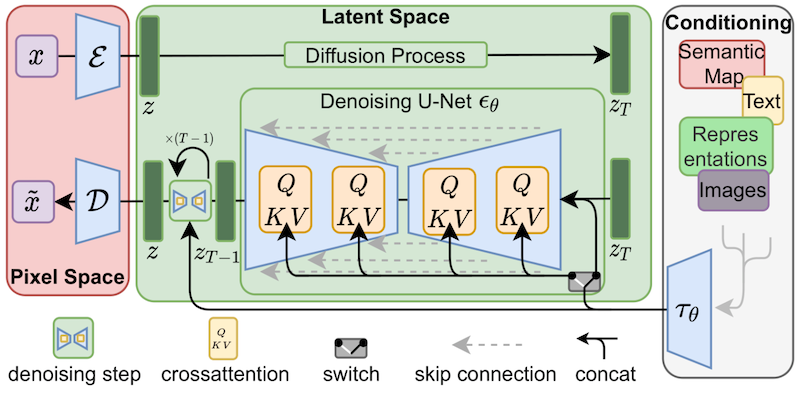
De forma bem resumida:
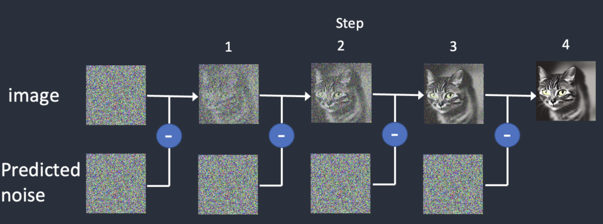
https://stable-diffusion-art.com/samplers/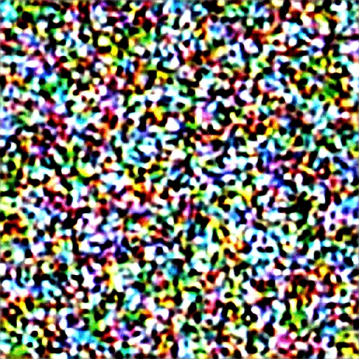
O Stable Diffusion é uma técnica de aprendizado profundo que gera imagens realistas ao simular um processo de difusão. Ele começa com uma imagem inicial aleatória e, em seguida, aplica pequenas alterações a cada passo, guiadas por um modelo de aprendizado profundo, até que a imagem final seja alcançada.
Eu vou tomar um tacacá
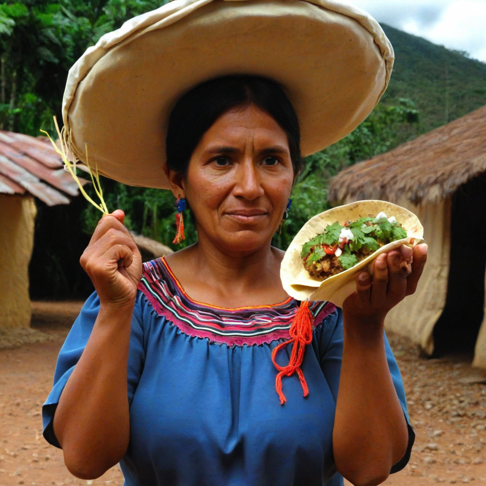
Antes do treinamentoDançar, curtir, ficar de boa
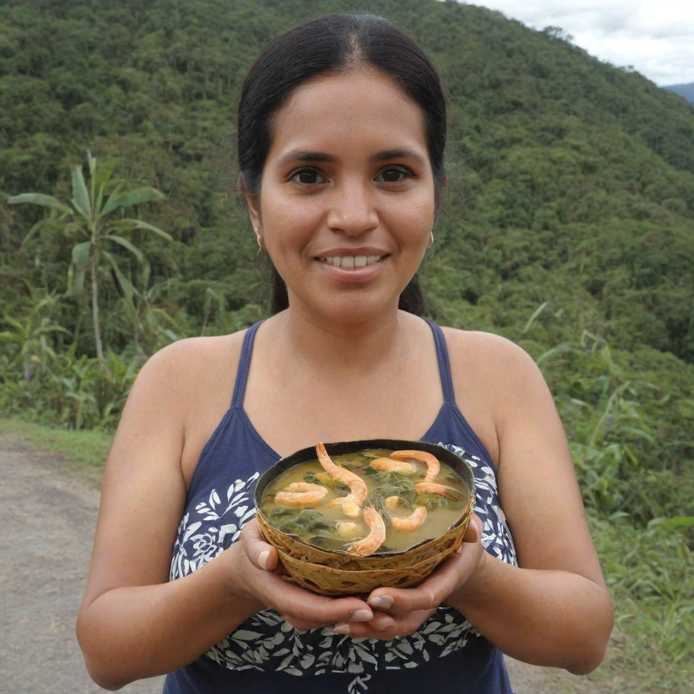
Após o treinamentoum modelo de IA é um zip probabilístico
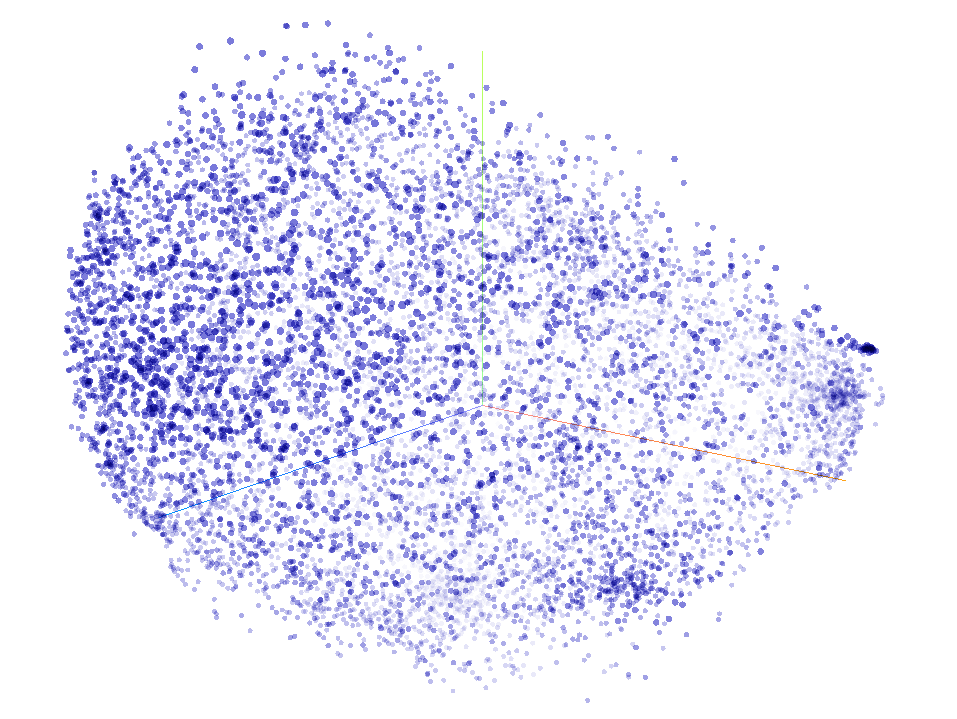
Em muitos conjuntos de dados de treinamento, certos termos e conceitos podem ser sub-representados, levando a um viés no modelo treinado. Isso pode resultar em um desempenho inferior quando o modelo é usado para gerar imagens que incluem esses termos e conceitos sub-representados.
Demonstração de Vieses
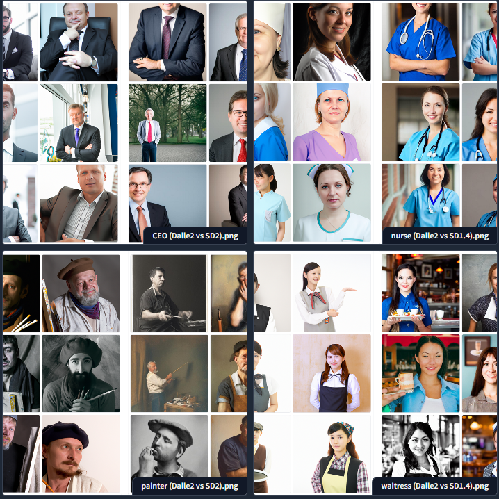
Stable BiasDLC / Expansão para IAs
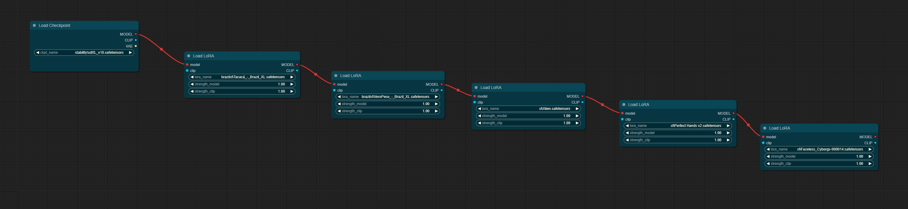
Stable Diffusion + LoRA + LoRA + LoRA...LoRA, ou Low-Rank Adaptation, é uma técnica de aprendizado profundo que permite a um modelo aprender representações mais ricas e detalhadas de dados. Ele faz isso ao focar em pequenas regiões da entrada de cada vez, permitindo que o modelo capture detalhes finos que podem ser perdidos por outros métodos.
Escolha um conjunto diversificado de 30+ imagens
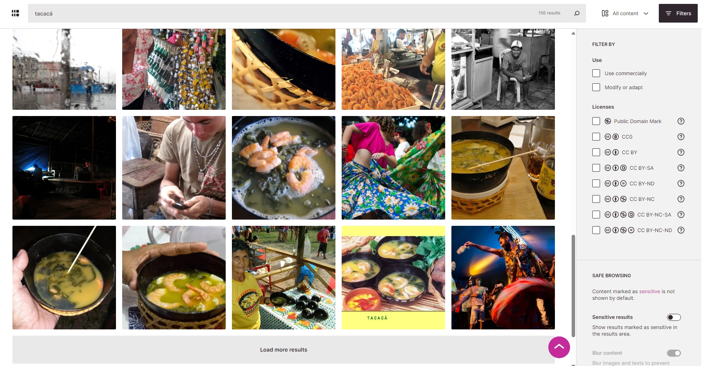
https://openverse.org/Adicione uma legenda para cada imagem
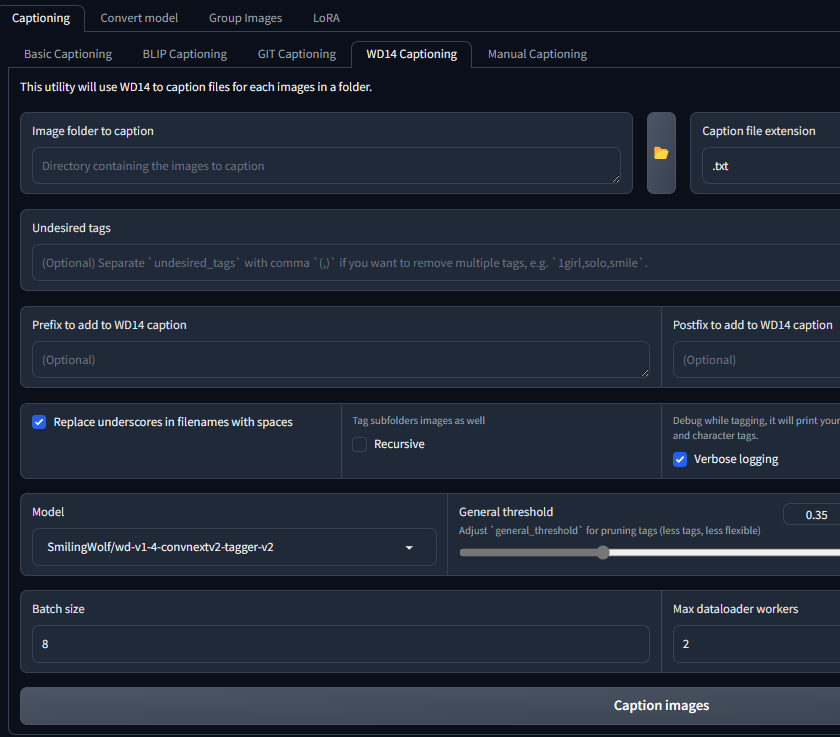
legendagem com kohya_ssTempo pode variar de alguns minutos a algumas horas
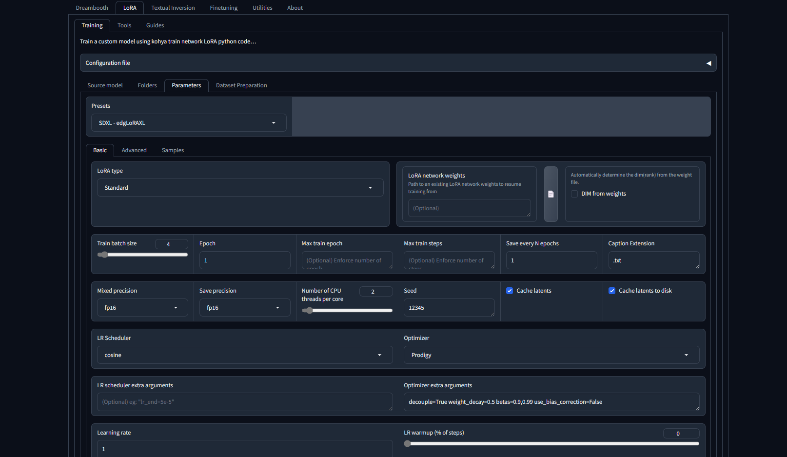
Treinamento com kohya_ssUse o modelo para gerar imagens
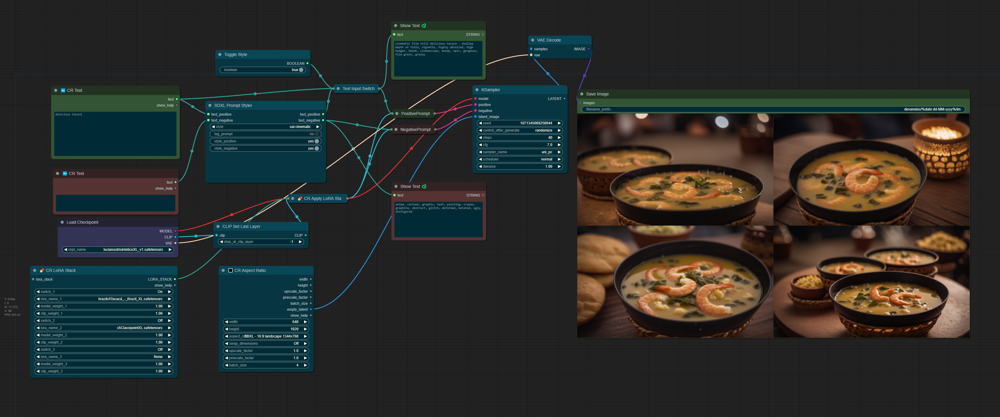
Inferência com Comfy UIVamos ver como ficaram os modelos treinados.
Quais suas dúvidas?
www.linkedin.com/in/lucianosb/